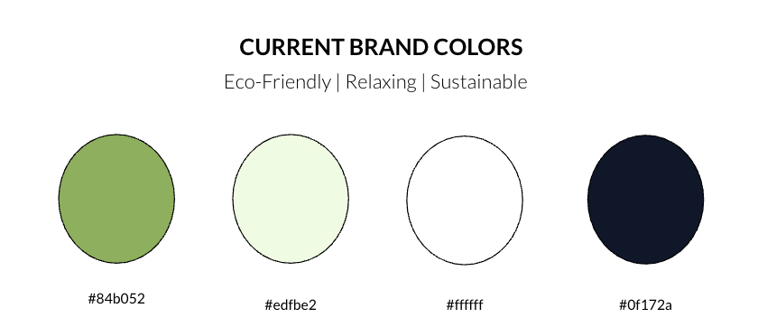
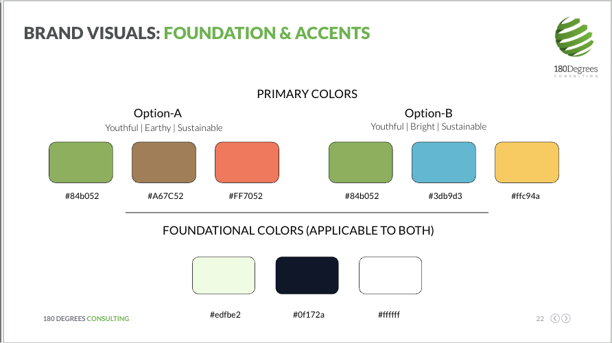
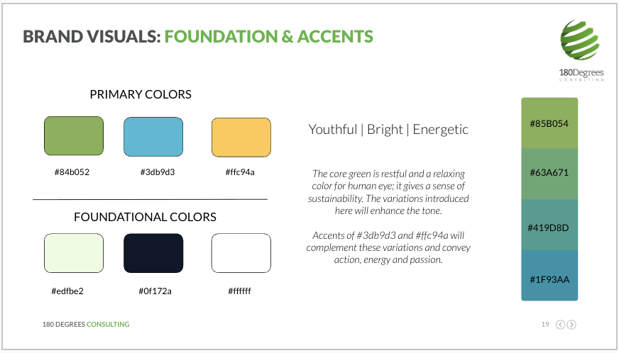
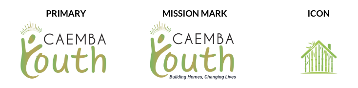
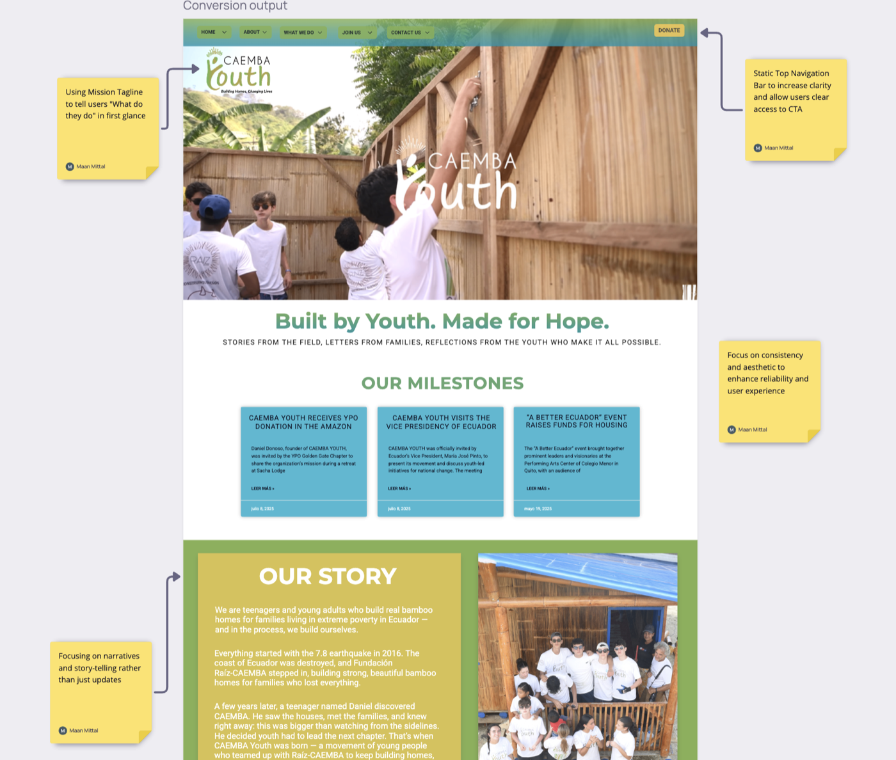

Caemba Youth is a youth-led organisation based in Quito, Ecuador, operating under The Raiz Foundation's CAEMBA program. The organisation raises funds to build homes for families living in extreme poverty.
As the organisation grew, its founder identified a key challenge: while Caemba Youth had a strong mission and active volunteers, its branding and communication did not clearly convey its purpose, impact, or credibility to young people and potential donors. This led us to frame the central challenge as:
"How can we help Caemba Youth clearly communicate its mission to young people and donors in a way that increases awareness, engagement, and trust?"
- Problem breakdown. I broke down the branding of Caemba Youth into separate components to identify pain points and gaps in how the organisation communicated its mission.
- Developing initial hypotheses. We brainstormed potential causes behind low engagement and limited clarity, forming early hypotheses around messaging consistency, audience alignment, and brand visibility.
- Prioritising matrix. We used a prioritisation matrix to focus on ideas with high-to-medium impact and low-to-medium effort due to the time and budget constraints.
- Analysis. Based on requirement, we chose to conduct a comprehensive brand audit, including social media analysis, an internal survey, benchmarking against similar youth-led organisations, and a review of existing brand visuals and assets.
- Initial recommendations. Based on our findings, we developed strategic recommendations that meet the key challenges identified and pitched them to the client for feedback.
- Iteration and consolidation. We used client feedback to refine our recommendations and translated them into clear, detailed, actionable plans.
My Role and Focus
I was responsible for developing Caemba Youth's visual brand guidelines. Based on the project scope, I led the creation of a foundational visual system that defined colour usage, typography, logo application, and consistency rules to improve mission clarity and long-term usability across platforms.
Brand Audit Insights (Visual Focus)
- Mission ambiguity. Existing visuals communicated a general sense of youthfulness but did not clearly reinforce Caemba Youth's core mission of home-building and social impact.
- Inconsistent application. Survey findings showed that while the brand visuals were well-liked, inconsistent use across materials reduced recognisability and trust.
- Limited visual hierarchy. The existing palette lacked accent colours that could guide attention, highlight calls to action, and improve clarity across digital and print.
Brand Colors



To address this, I developed two palette options that retained the core green while introducing strategic accents to support clarity, energy, and hierarchy. Option A focused on earthy, grounded tones to reinforce stability and trust, while Option B introduced brighter accent colours to balance youthfulness with action and engagement. After reviewing both directions with the client, Option B was selected as it was better aligned with the voice of Caemba Youth. Based on this selection, I developed a set of colour variations and usage rules to ensure consistency while allowing adaptability across different contexts.
Typography
Typography was designed to balance clarity and energy across both digital and print contexts. Montserrat was selected for headings to create a strong, modern hierarchy, while Roboto was chosen for body text due to its high readability and scalability across devices.
Logo System

To improve recognition while supporting different use cases, the logo system was expanded into three formats. The primary logo serves as the core identifier, while the mission mark was designed for external-facing materials to clearly communicate Caemba Youth's purpose. A simplified icon was created for small-scale applications where space is limited. Clear usage rules were defined to maintain consistency and prevent distortion across platforms.
The image below shows the solutions we highlighted and presented in a homepage mockup for the existing website:

The final deliverables included:
- Final presentation
- Report (including brand guidelines)
- Website sample
- Logo files (utility icon and mission mark)
The client responded very positively to the final outcome and approved the proposed visual direction and brand guidelines. Following the handover, Caemba Youth began implementing the recommendations across their website and social media platforms. These early changes have helped improve mission clarity and contributed to increased engagement across their digital channels.